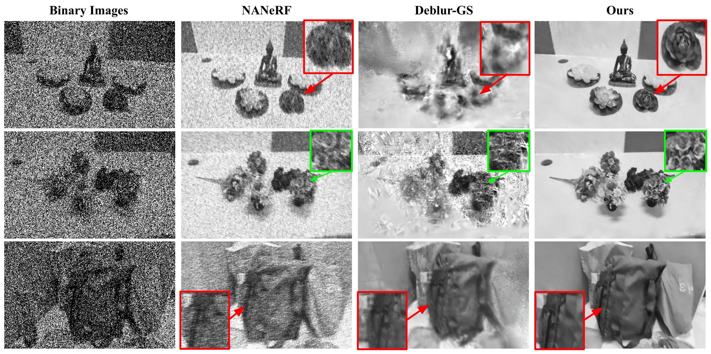

Results on various corruptions

Results on Restoring Multiple corruptions

Neural rendering techniques can synthesize photorealistic novel-view images of scenes from a collection of multi-view imagery. However, they often fail when the input imagery is motion blurred, a scenario that often presents itself in high speed camera motion and object motion. In this paper, we advance neural rendering techniques in high speed camera motion setting using single-photon avalanche diode (SPAD) arrays, an emerging sensing technology capable of sensing images at hundreds of thousands of frames per second. However, SPADs come with their own set of challenges: they produce binary frames that are inherently noisy, and the resulting averaged frames are blurry monochromatic images. For these monochromatic images the conventional 2D colorization methods yield inconsistent results. These limitations reduce the efficacy of SPAD data in downstream tasks such as depth estimation and segmentation. To address these challenges, we introduce \textbf{PhotonSplat}, a framework designed to reconstruct 3D scenes directly from SPAD binary images, effectively navigating the noise vs. blur trade-off. Our approach incorporates a 3D spatial filtering technique to reduce noise within novel-view reconstructions. Moreover, we extend this framework to support view-consistent colorization of grayscale reconstructions from a single blurred reference color image. Additionally, PhotonSplat facilitates simple editing tasks due to its explicit scene modeling capabilities. We further contribute \textit{PhotonScenes}, a real-world multi-view dataset captured with the SPAD sensors.
@article{gupta2024gaura,
title={GAURA: Generalizable Approach for Unified Restoration and Rendering of Arbitrary Views},
author={Gupta, Vinayak and Simhachala Venkata Girish, Rongali and Varma T, Mukund and Tewari, Ayush and Mitra, Kaushik},
journal={arXiv preprint arXiv:2407.08221},
year={2024}
}